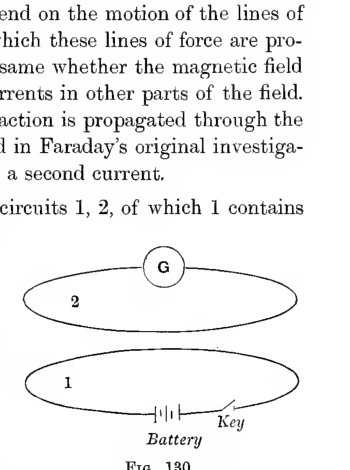
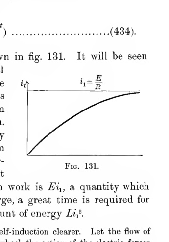
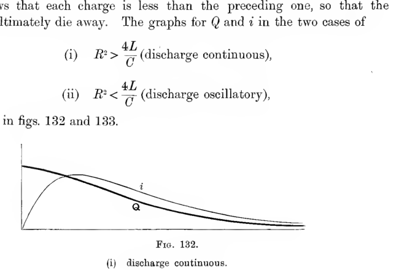
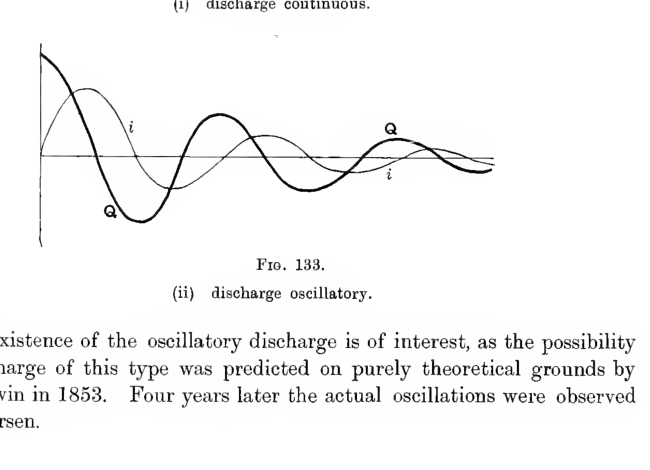

Chapter XIV#
Induction of Currents in Linear Circuits#
Physical Principles.#
506. It has been seen that, on moving a magnetic pole about in the presence of electric currents, there is a certain amount of work done on the pole by the forces of the field. If the conservation of energy is to be true of a field of this kind, the work done on the magnetic pole must be represented by the disappearance of an equal amount of energy in some other part of the field. If all the currents in the field remain steady, there is only one store of energy from which this amount of work can be drawn, namely the energy of the batteries which maintain the currents, so that these batteries must, during the motion of the magnetic poles, give up more than sufficient energy to maintain the currents, the excess amount of energy representing work performed on the poles. Or again, if the batteries supply energy at a uniform rate, part of this energy must be used in performing work on the moving poles, so that the currents maintained in the circuits will be less than they would be if the moving poles were at rest.
Let us suppose that we have an imaginary arrangement by which additional electromotive forces can be inserted into, or removed from, each circuit as required, and let us suppose that this arrangement is manipulated so as to keep each current constant.
Consider first the case of a single movable pole of strength \(m\) and a single circuit in which the current is maintained at a uniform strength \(i\). If \(\omega\) is the solid angle subtended by the circuit at the position of the pole at any instant, the potential energy of the pole in the field of the current is \(mi\omega\), so that in an infinitesimal interval \(dt\) of the motion of the pole, the work performed on the pole by the forces of the field is \(mi\,\dfrac{d\omega}{dt}\,dt\). The current which has flowed in this time is \(i\,dt\), so that the extra work done by the additional batteries is the same as that of an additional electromotive force \(m\,\dfrac{d\omega}{dt}\).
Thus the motion of the pole must have set up an additional electromotive force in the circuit of amount \(-m\,\dfrac{d\omega}{dt}\), to counteract which the additional electromotive forces are needed. The electromotive force \(-m\,\dfrac{d\omega}{dt}\) which appears to be set up by the motion of the magnets is called the electromotive force due to induction.
The number of tubes of induction which start from the pole of strength \(m\) is \(4\pi m\), and of these a number \(m\omega\) pass through the circuit. Thus if \(n\) is the number of tubes of induction which pass through the circuit at any instant, the electromotive force may be expressed in the form
So also if we have any number of magnetic poles, or any magnetic system of any kind, we find, by addition of effects such as that just considered, that there will be an electromotive force \(-\dfrac{dN}{dt}\) arising from the motion of the whole system, where \(N\) is the total number of tubes of induction which cut the circuit.
It will be noticed that the argument we have given supplies no reason for taking \(N\) to be the number of tubes of induction rather than tubes of force. But if the number of tubes crossing the circuit is to depend only on the boundary of the circuit we must take tubes of induction and not tubes of force, for the induction is a solenoidal vector while the force, in general, is not.
507. The electromotive force of induction \(-\dfrac{dN}{dt}\) has been supposed to be measured in the same direction as the current, and on comparing this with the law of signs previously given in Section 483, we obtain the relation between the directions of the electromotive force round the circuit, and of the lines of induction across the circuit. The magnitude and direction of the electromotive force are given in the two following laws:
Neumann’s Law. Whenever the number of tubes of magnetic induction which are enclosed by a circuit is changing, there is an electromotive force acting round the circuit, in addition to the electromotive force of any batteries which may be in the circuit, the amount of this additional electromotive force being equal to the rate of diminution of the number of tubes of induction enclosed by the circuit.
Lenz’s Law. The positive direction of the electromotive force \(\left(-\dfrac{dN}{dt}\right)\) and the direction in which a tube of force must pass through the circuit in order to be counted as positive, are related in the same way as the forward motion and rotation of a right-handed screw.
If there is no battery in the circuit, the total electromotive force will be \(-\dfrac{dN}{dt}\), and the current originated by this electromotive force is spoken of as an “induced” current.
508. In order that the phenomena of induced currents may be consistent with the conservation of energy, it must obviously be a matter of indifference whether we cause the magnetic lines of induction to move across the circuit, or cause the circuit to move across the lines of induction. Thus Neumann’s Law must apply equally to a circuit at rest and a circuit in motion. So also if the circuit is flexible, and is twisted about so as to change the number of lines of induction which pass through it, there will be an induced current of which the amount will be given by Neumann’s Law.
509. For instance if a metal ring is spun about a diameter, the number of lines of induction from the earth’s field which pass through it will change continuously, so that currents will flow in it. Furthermore, energy will be consumed by these currents so that work must be expended to keep the ring in rotation. Again the wheels and axles of two cars in motion on the same line of rails together with the rails themselves, may be regarded as forming a closed circuit of continually changing dimensions in the earth’s magnetic field. Thus there will be currents flowing in the circuit, and there will be electromagnetic forces tending to retard or accelerate the motions of the cars.
510. If, as we have been led to believe, electromagnetic phenomena are the effect of the action of the medium itself, and not of action at a distance, it is clear that the induced current must depend on the motion of the lines of force, and cannot depend on the manner in which these lines of force are produced. Thus induction must occur just the same whether the magnetic field originates in actual magnets or in electric currents in other parts of the field. This consequence of the hypothesis that the action is propagated through the medium is confirmed by experiment; indeed in Faraday’s original investigations on induction, the field was produced by a second current.
511. Let us suppose that we have two circuits \(1,2\), of which \(1\) contains a battery and a key by which the circuit can be closed and broken, while circuit \(2\) remains permanently closed, and contains a galvanometer but no battery. On closing the circuit \(1\), a current flows through circuit \(1\), setting up a magnetic field. Some of the tubes of induction of this field pass through circuit \(2\), so that the number of these tubes changes as the current establishes itself in circuit \(1\), and the galvanometer in \(2\) will accordingly shew a current. When the current in \(1\) has reached its steady value, as given by Ohm’s Law, the number of tubes through circuit \(2\) will no longer vary with the time, so that there will be no electromotive force in circuit \(2\), and the galvanometer will show no current. If we break the circuit \(1\), there is again a change in the number of tubes of induction passing through the second circuit, so that the galvanometer will again shew a momentary current.

Two horizontal closed circuits are drawn one above the other. The upper loop is labeled
2and contains a galvanometer markedG; the lower loop is labeled1and contains a battery and a key. The figure shows how a current started in the lower primary circuit can induce a transient current in the upper secondary circuit.
General Equations.#
General Equations of Induction in Linear Circuits.#
512. Let us suppose that we have any number of circuits \(1,2,\ldots\). Let their resistances be \(R_1,R_2,\ldots\), let them contain batteries of electromotive forces \(E_1,E_2,\ldots\), and let the currents flowing in them at any instant be \(i_1,i_2,\ldots\).
The numbers of tubes of induction \(N_1,N_2,\ldots\) which cross these circuits are given by
and similarly for the other circuits. In circuit \(1\) there is an electromotive force \(E_1\) due to the batteries, and an electromotive force \(-\dfrac{dN_1}{dt}\) due to induction. Thus the total electromotive force at any instant is \(E_1 - \dfrac{dN_1}{dt}\), and this, by Ohm’s law, must be equal to \(R_1 i_1\). Thus we have the equation
Similarly for the second circuit,
and so on for the other circuits. Equations (431), (432), … may be regarded as differential equations from which we can derive the currents \(i_1,i_2,\ldots\) in terms of the time and the initial conditions. We shall consider various special cases of this problem.
Induction in a Single Circuit.#
513. If there is only a single circuit, of resistance \(R\) and self-induction \(L\), equation (431) becomes
Let us use this equation first to find the effect of closing a circuit previously broken. Suppose that before the time \(t=0\) the circuit has been open, but that at this instant it is suddenly closed with a key, so that the current is free to flow under the action of the electromotive force \(E\).
The first step will be to determine the conditions immediately after the circuit is closed. Since \(\dfrac{d}{dt}(Li_1)\) is, by equation (433), a finite quantity, it follows that \(Li_1\) must increase or decrease continuously, so that immediately after closing the circuit the value of \(Li_1\) must be zero.
To find the way in which \(i_1\) increases, we have now to solve equation (433), in which \(E\), \(L\) and \(R\) are all constants, subject to the initial condition that \(i_1 = 0\) when \(t=0\). Writing the equation in the form
we see that the general solution is
where \(C\) is a constant, and in order that \(i_1\) may vanish when \(t=0\), we must have \(C=E\), so that the solution is
The graph of \(i_1\) as a function of \(t\) is shown in fig. 131. It will be seen that the current rises gradually to its final value \(E/R\) given by Ohm’s Law, this rise being rapid if \(L\) is small, but slow if \(L\) is great. Thus we may say that the increase in the current is retarded by its self-induction. We can see why this should be so. The energy of the current is \(\tfrac{1}{2}Li_1^2\), and this is large when \(L\) is large. This energy represents work performed by the electric forces: when the current is \(i_1\), the rate at which these forces perform work is \(Ei_1\), a quantity which does not depend on \(L\). Thus when \(L\) is large, a great time is required for the electric forces to establish the great amount of energy \(Li_1^2\).
A simple analogy may make the effect of this self-induction clearer. Let the flow of the current be represented by the turning of a mill-wheel, the action of the electric forces being represented by the falling of the water by which the mill-wheel is turned. A large value of \(L\) means large energy for a finite current, and must therefore be represented by supposing the mill-wheel to have a large moment of inertia. Clearly a wheel with a small moment of inertia will increase its speed up to its maximum speed with great rapidity, while for a wheel with a large moment of inertia the speed will only increase slowly.

A single rising current curve starts from zero and approaches the horizontal limiting value \(i_1 = E/R\). The plot illustrates the gradual growth of current after a circuit is closed, showing the retardation produced by self-induction.
514. Alternating Current. Let us next suppose that the electromotive force in the circuit is not produced by batteries, but by moving the circuit, or part of the circuit, in a magnetic field. If \(N\) is the number of tubes of induction of the external magnetic field which are enclosed by the circuit at any instant, the equation is
The simplest case arises when \(N\) is a simple-harmonic function of the time, proportional let us say to \(\cos pt\). We can simplify the problem by supposing that \(N\) is of the form \(C(\cos pt + i\sin pt)\). The real part of \(N\) will give rise to a real value of \(i_1\), and the imaginary part of \(N\) to an imaginary value of \(i_1\). Thus if we take \(N = Ce^{ipt}\) we shall obtain a value for \(i_1\) of which the real part will be the true value required for \(i_1\).
Assuming \(N = C(\cos pt + i\sin pt) = Ce^{ipt}\), the equation becomes
and clearly the solution will be proportional to \(e^{ipt}\). Thus the differential operator \(\dfrac{d}{dt}\) will act only on a factor \(e^{ipt}\), and will accordingly be equivalent to multiplication by \(ip\). We may accordingly write the equation as
a simple algebraic equation of which the solution is
Let the modulus and argument of this expression be denoted by \(\rho\) and \(\chi\), so that the value of the whole expression is \(\rho(\cos\chi + i\sin\chi)\). The value of \(\rho\), the modulus, is equal to the product of the moduli of the factors, so that
while the argument \(\chi\), being equal to the sum of the arguments of the factors, is given by
The solution required for \(i_1\) is the real term \(\rho\cos\chi\), so that
The electromotive force produced by the change in the number of tubes of the external field is
Thus, if self-induction were neglected, the current, as given by Ohm’s Law, would be
and this of course would agree with that which would be given by equation (436) if \(L\) were zero. The modifications produced by the existence of self-induction are represented by the presence of \(L\) in expression (436), and are two in number. In the first place the phase of the current lags behind that of the impressed electromotive force by \(\operatorname{tan}^{-1}(Lp/R)\), and in the second place the apparent resistance is increased from \(R\) to \(\sqrt{R^2 + L^2p^2}\).
515. The conditions assumed in this problem are sufficiently close to those which occur in the working of a dynamo to illustrate this working. A coil which forms part of a complete circuit is caused to rotate rapidly in a magnetic field in such a way as to cut a varying number of lines of induction.
The quantity \(\dfrac{p}{2\pi}\) may be supposed to represent the number of alternations per second. In the simple case of a two-pole alternator this will be equal to the number of revolutions of the engine by which the dynamo is driven, so that the current sent through the circuit will be an “alternating” current of frequency equal to that of the engine. In the example given, the rate at which heat is generated is \(\rho^2(\cos\chi)^2R\), and the average rate, averaged over a large number of alternations, is
This, then, would be the rate at which the engine driving the dynamo would have to perform the work.
516. Discharge of a Condenser. A further example of the effect of induction in a single circuit which is of extreme interest is supplied by the phenomenon of the discharge of a condenser.
Let us suppose that the charges on the two plates at any instant are \(Q\) and \(-Q\), the plates being connected by a wire of resistance \(R\) and self-induction \(L\). If \(C\) is the capacity of the condenser, the difference of potential of the two plates will be \(Q/C\), and this will now play the same part as the electromotive force of a battery. The equation is accordingly
The quantities \(Q\) and \(i\) are not independent, for \(i\) measures the rate of flow of electricity to or from either plate, and therefore the rate of diminution of \(Q\). We accordingly have \(i = -\dfrac{dQ}{dt}\), and on substituting this expression for \(i\), equation (437) becomes
The solution is known to be
where \(A\), \(B\) are arbitrary constants, and \(\lambda_1\), \(\lambda_2\) are the roots of
If the circuit is completed at time \(t=0\), the charge on each plate being initially \(Q_0\), we must have, at time \(t=0\),
and these conditions determine the constants \(A\) and \(B\). The equations giving these quantities are
If the roots of equation (439) are real, it is clear, since both their sum and their product are positive, that they must themselves be positive quantities. Thus the value of \(Q\) given by equation (438) will gradually sink from \(Q_0\) to zero. The current at any instant is
and this starts by being zero, rises to a maximum and then falls again to zero. The current is always in the same direction, so that \(Q\) is always of the same sign.
It is, however, possible for equation (439) to have imaginary roots. This will be the case if
is negative. Denoting \(R^2 - \dfrac{4L}{C}\), when negative, by \(-\kappa^2\), the roots will be
so that the solution (438) becomes
where \(D\), \(\epsilon\) are new constants. In this case the discharge is oscillatory. The charge \(Q\) changes sign at intervals \(\dfrac{2\pi L}{\kappa}\), so that the charges surge backwards and forwards from one plate to the other. The presence of the exponential \(e^{-Rt/2L}\) shews that each charge is less than the preceding one, so that the charges ultimately die away. The graphs for \(Q\) and \(i\) in the two cases of
are given in figs. 132 and 133.

Two smooth decaying curves are plotted against time. The quantity \(Q\) begins at a positive value and decays steadily toward zero, while the current \(i\) starts from zero, rises to a single maximum, and then decays back to zero without changing sign. This is the continuous condenser discharge case.

Two damped oscillatory curves are shown about a central axis. Both \(Q\) and \(i\) alternate in sign while their amplitudes decrease from cycle to cycle, illustrating the oscillatory discharge of a condenser when the resistance is small enough compared with the inductance and capacity.
The existence of the oscillatory discharge is of interest, as the possibility of a discharge of this type was predicted on purely theoretical grounds by Lord Kelvin in 1853. Four years later the actual oscillations were observed by Feddersen.
Pair of Circuits.#
517. It is of value to compare the physical processes in the two kinds of discharge.
Let us consider first the continuous discharge of which the graphs are shown in fig. 132. The first part of the discharge is similar to the flow already considered in Section 513. At first we can imagine that the condenser is exactly equivalent to a battery of electromotive force \(E = \dfrac{Q}{C}\) and the act of discharging is equivalent to completing a circuit containing this battery. After a time the difference between the two cases comes into effect. The battery would maintain a constant electromotive force, so that the current would reach a constant final value \(\dfrac{E}{R}\), whereas the condenser does not supply a constant electromotive force. As the discharge occurs, the potential difference between the plates of the condenser diminishes, and so the electromotive force, and consequently the current, also diminish. Thus the graph for \(i\) in fig. 132 can be regarded as shewing a gradual increase towards the value \(\dfrac{E}{R}\) (where \(E = \dfrac{Q}{C}\)) in the earlier stages, combined with a gradual falling off of the current, consequent on the diminution of \(E\), in the later stages.
For the oscillatory discharge to occur, the value of \(L\) must be greater than for the continuous discharge. The energy of a current of given amount is accordingly greater, while the rate at which this is dissipated by the generation of heat, namely \(Ri^2\), remains unaltered by the greater value of \(L\). Thus for sufficiently great values of \(L\) the current may persist even after the condenser is fully discharged, a continuation of the current meaning that the condenser again becomes charged, but with electricity of different signs from the original charges. In this way we get the oscillatory discharge.
Induction in a Pair of Circuits.#
518. If \(L, M, N\) are the coefficients of induction (\(L_{11}\), \(L_{12}\), \(L_{22}\)) of a pair of circuits of resistances \(R, S\), in which batteries of electromotive forces \(E_1, E_2\) are placed, the general equations become
Sudden Completing of Circuit.#
519. Let us consider the conditions which must hold when one of the circuits is suddenly completed, the process occupying the infinitesimal interval from \(t = 0\) to \(t = \tau\). Let the changes which occur in \(i_1\) and \(i_2\) during this interval be denoted by \(\Delta i_1\) and \(\Delta i_2\). Equations (440) and (441) shew that during the interval from \(t = 0\) to \(t = \tau\) the values of \(\dfrac{d}{dt}(Li_1 + Mi_2)\) and of \(\dfrac{d}{dt}(Mi_1 + Ni_2)\) are finite, so that when \(\tau\) is infinitesimal, the changes in \(Li_1 + Mi_2\) and \(Mi_1 + Ni_2\) must vanish. Thus we must have
Except in the special case in which \(LN - M^2 = 0\) (a case of importance, which will be considered later), these equations can be satisfied only by \(\Delta i_1 = \Delta i_2 = 0\). Thus the currents remain unaltered by suddenly making a circuit, and the change in the currents is gradual and not instantaneous.
520. Suppose, for instance, that before the instant \(t = 0\) circuit \(2\) is closed but contains no battery, while circuit \(1\), containing a battery, is broken. Let circuit \(1\) be closed at the instant \(t = 0\), then the initial conditions are that at time \(t = 0\), \(i_1 = i_2 = 0\). The equations to be solved are
The solution is known to be
where \(A, A', B, B'\) are constants, and \(\lambda, \lambda'\) are the roots of
or of
The energy of the currents, namely
being positive for all values of \(i_1\) and \(i_2\), it follows that \(LN - M^2\) is necessarily positive. Since \(RS\) and \(RN + SL\) are also necessarily positive, we see that all the coefficients in equation (444) are positive, so that the roots \(\lambda, \lambda'\) are both positive.
When \(t = 0\), we must have
and in order that equation (443) may be satisfied at every instant, we must have
for all values of \(t\), and for this to be satisfied the coefficients of \(e^{-\lambda t}\) and \(e^{-\lambda' t}\) must vanish separately. Thus we must have
and if these relations are satisfied, and \(\lambda, \lambda'\) are the roots of equation (444), then equation (442) will be satisfied identically. From equations (445), (446), (447) and (448), we obtain
and the solution is found to be
We notice that the current in \(1\) rises to its steady value \(\dfrac{E}{R}\), the rise being similar in nature to that when only a single circuit is concerned (Section 513). The rise is quick if \(\lambda\) and \(\lambda'\) are large, i.e. if the coefficients of induction are small, and conversely. The current in \(2\) is initially zero, rises to a maximum and then sinks again to zero. The changes in this current are quick or slow according as those of current \(1\) are quick or slow.
Sudden Breaking of Circuit.#
521. The breaking of a circuit may be represented mathematically by supposing the resistance to become infinite. Thus if circuit \(1\) is broken, the process occurring in the interval from \(t = 0\) to \(t = \tau\), the value of \(R\) will become infinite during this interval, while the value of \(i_1\) becomes zero. The changes in \(i_1\) and \(i_2\) are still determined by equations (440) and (441), but we can no longer treat \(R\) as a constant, and we cannot assert that in the interval from \(0\) to \(\tau\) the value of \(Ri_1\) is always finite.
It follows, however, from equation (441) that \(\dfrac{d}{dt}(Mi_1 + Ni_2)\) remains finite throughout the short interval, so that we have, with the same notation as before,
Suppose for instance that before the circuit \(1\) was broken we had a steady current \(\dfrac{E_1}{R}\) in circuit \(1\), and no current in circuit \(2\). We shall then have
so that
and therefore immediately after the break, the initial current in circuit \(2\) is
This current simply decays under the influence of the resistance of the circuit. Putting \(E_2 = 0\) and \(i_1 = 0\) in equation (441) we obtain
and the solution which gives to \(i_2 = \dfrac{ME_1}{NR}\) initially is
The changes in the current \(i_1\) during the infinitesimal interval \(\tau\) are of interest. These are governed by equation (440), the value of \(R\) not being constant.
The value of \(E_1\) is finite, and may accordingly be neglected in comparison with the other terms of equation (440), which are very great during the interval of transition. Thus the equation becomes, approximately,
The value of \(\dfrac{d}{dt}(Mi_1 + Ni_2)\) is, as we have already seen, finite, so that we may subtract \(\dfrac{M}{N}\) times this quantity from the left-hand member of equation (449) and the equation remains true. By doing this we eliminate \(i_2\), and obtain
The solution which gives to \(i_1\) the initial value \((i_1)_0\) is
giving the way in which the current falls to zero. We notice that if \(LN - M^2\) is very small, the current falls off at once, while if \(LN - M^2\) is large, the current will persist for a longer time. In the former case the breaking of the circuit is accompanied only by a very slight spark, in the latter case by a stronger spark.
One Circuit Containing a Periodic Electromotive Force.#
522. Let us suppose next that the circuits contain no batteries, but that circuit \(1\) is acted upon by a periodic electromotive force, say \(E\cos pt\), such as might arise if this circuit contained a dynamo.
As in Section 514, it is simplest to assume an electromotive force \(Ee^{ipt}\): the solution actually required will be obtained by ultimately rejecting the imaginary terms in the solution so obtained.
The equations to be solved are now
As before both \(i_1\) and \(i_2\), as given by these equations, will involve the time only through a factor \(e^{ipt}\), so that we may replace \(\dfrac{d}{dt}\) by \(ip\), and the equations become
from which we obtain
The current \(i_1\) in the primary is given, from these equations, by
where
The case of no secondary circuit being present is obtained at once by putting \(S = \infty\), and the solution for \(i_1\) is seen to be the same as if no secondary circuit were present, except that \(R', L'\) are replaced by \(R\) and \(L\). Thus the current in the primary circuit is affected by the presence of the secondary in just the same way as if its resistance were increased from \(R\) to \(R'\), and its coefficient of self-induction decreased from \(L'\) to \(L\).
523. The analysis is of practical importance in connection with the theory of transformers. In such applications, the current usually is of very high frequency, so that \(p\) is large, and we find that approximately the ratio of the amplitudes (cf. expression (452)) is \(\dfrac{M}{N}\), while the difference of phase (cf. expression (453)) is \(\pi\). These limiting results, for the case of \(p\) infinite, can be obtained at a glance from equation (451). The right-hand member, \(Si_2\), is finite, so that \(\dfrac{d}{dt}(Mi_1 + Ni_2)\) is finite in spite of the infinitely rapid variations in \(i_1\) and \(i_2\) separately. In other words, we must have approximately \(Mi_1 + Ni_2\) constant, and clearly the value of this constant must be zero, giving at once the two results just obtained.
524. Whatever the value of \(p\), the result expressed in equation (452) can be deduced at once from the principle of energy. The current in the primary is the same as it would be if the secondary circuit were removed and \(R, L\) changed to \(R', L'\). Thus the rate at which the generator performs work is \(Ri_1'^2\), or averaged over a great number of periods (since \(i_1\) is a simple-harmonic function of the time) is \(\tfrac{1}{2}R'|i_1|^2\). Of this an amount \(\tfrac{1}{2}R|i_1|^2\) is consumed in the primary, so that the rate at which work is performed in the secondary is \(\tfrac{1}{2}(R' - R)|i_1|^2\), or
This rate of performing work is also known to be \(\tfrac{1}{2}S|i_2|^2\), and on equating these two expressions we obtain at once the result expressed by equation (452).
Case in which \(LN - M^2\) is small.#
525. The energy of currents \(i_1, i_2\) in the two circuits is
and since this must always be positive, it follows that \(LN - M^2\) must necessarily be positive. The results obtained in the special case in which \(LN - M^2\) is so small as to be negligible in comparison with the other quantities involved are of special interest, so that we shall now examine what special features are introduced into the problems when \(LN - M^2\) is very small.
Expression (454) can be transformed into
so that when \(LN - M^2\) is neglected the energy becomes
and this vanishes for the special case in which the currents are in the ratio \(i_1/i_2 = -M/L\). This enables us to find the geometrical meaning of the relation \(LN - M^2 = 0\). For since the energy of the currents, as in Section 501, is
we see that this energy can only vanish if the magnetic force vanishes at every point. This requires that the equivalent magnetic shells must coincide and be of strengths which are equal and opposite. Thus the two circuits must coincide geometrically. The number of turns of wire in the circuits may of course be different: if we have \(r\) turns in the primary and \(s\) in the secondary, we must have
and when the currents are such as to give a field of zero energy, each fraction is equal to \(-i_2/i_1\).
526. Let us next examine the modifications introduced into the analysis by the neglect of \(LN - M^2\) in problems in which the value of this quantity is small. We have the general equations (Section 518),
If we multiply equation (455) by \(M\) and equation (456) by \(L\) and subtract, we obtain
an equation which contains no differentials.
527. To illustrate, let us consider the sudden making of one circuit, discussed in the general case in Section 519. The general equations there obtained, namely
now become identical. We no longer can deduce the relations \(\Delta i_1 = \Delta i_2 = 0\), but have only the single initial condition
But by supposing equations (455) and (456) replaced by equations (455) and (457) we have only one differential coefficient and therefore only one constant of integration in the solution, and this can be determined from the one initial condition expressed by equation (458).
Let us, for instance, consider the definite problem discussed (for the general case) in Section 520. Circuit \(2\) contains no battery so that \(E_2 = 0\), and at time \(t = 0\) circuit \(1\) is suddenly closed, so that the electromotive force \(E_1\) comes into play in the first circuit. The initial currents are given by
so that
Thus finite currents come into existence at once, but the system of currents is one of zero energy, since equation (459) is satisfied. To find the subsequent changes, we multiply equation (455) by \(\dfrac{L}{R}\) and equation (456) by \(\dfrac{M}{S}\) (putting \(E_2 = 0\)), and find on addition
of which the solution, subject to the initial condition \(Li_1 + Mi_2 = 0\), is
This and equation (460) determine the currents at any time.
These results can of course be deduced also by examining the limiting form assumed by the solution of Section 520, when \(LN - M^2\) vanishes.
The problem of the breaking of a circuit, discussed in Section 521, can be examined in a similar way in the special case in which \(LN - M^2 = 0\).
References.#
J. J. Thomson. Elements of the Mathematical Theory of Electricity and Magnetism, Chap. X.
Maxwell. Electricity and Magnetism, Part IV, Chap. III.
Winkelmann. Handbuch der Physik (2te Auflage), Vol. V, p. 536.
Examples.#
A coil is rotated with constant angular velocity \(\omega\) about an axis in its plane in a uniform field of force perpendicular to the axis of rotation. Find the current in the coil at any time, and shew that it is greater when the plane of the coil makes an angle \(\tan^{-1}\left(\dfrac{L\omega}{R}\right)\) with the lines of magnetic force.
The resistance and self-induction of a coil are \(R\) and \(L\), and its ends \(A\) and \(B\) are connected with the electrodes of a condenser of capacity \(C\) by wires of negligible resistance. There is a current \(I\cos pt\) in a circuit connecting \(A\) and \(B\), and the charge of the condenser is in the same phase as this current. Shew that the charge at any time is \(\dfrac{LI}{R}\cos pt\), and that \(C(R^2 + p^2L^2)=L\). Obtain also the current in the coil.
The ends \(B, D\) of a wire \((R, L)\) are connected with the plates of a condenser of capacity \(C\). The wire rotates about \(BD\) which is vertical with angular velocity \(\omega\), the area between the wire and \(BD\) being \(A\). If \(H\) is the horizontal component of the earth’s magnetism, shew that the average rate at which work must be done to maintain the rotation is
A closed solenoid consists of a large number \(N\) of circular coils of wire, each of radius \(a\), wound uniformly upon a circular cylinder of height \(2h\). At the centre of the cylinder is a small magnet whose axis coincides with that of the cylinder, and whose moment is a periodic quantity \(\mu\sin pt\). Shew that a current flows in the solenoid whose intensity is approximately
where \(R, L\) are the resistance and self-induction of the solenoid, and \(\tan\alpha = R/Lp\).
A circular coil of \(n\) turns, of radius \(a\) and resistance \(R\), spins with angular velocity \(\omega\) round a vertical diameter in the earth’s horizontal magnetic field \(H\): shew that the average electromagnetic damping couple which resists its motion is \(\tfrac{1}{2}H^2n^2\omega^4a_0/R\). Given \(H=.17\), \(n=50\), \(R=1\) ohm, \(a=10\) cm., and that the coil makes 20 turns per second, express the couple in dyne-centimetres, and the mean square of the current in amperes.
A condenser, capacity \(C\), is discharged through a circuit, resistance \(R\), induction \(L\), containing a periodic electromotive force \(E\sin nt\). Shew that the “forced” current in the circuit is
where \(\tan\theta = (n^2CL - 1)/nCR\).
Two circuits, resistances \(R_1\) and \(R_2\), coefficients of induction \(L, M, N\), lie near each other, and an electromotive force \(E\) is switched into one of them. Shew that the total quantity of electricity that traverses the other is \(EM/R_1R_2\).
A current is induced in a coil \(B\) by a current \(I\sin pt\) in a coil \(A\). Shew that the mean force tending to increase any coordinate of position \(\theta\) is
where \(L, M, N\) are the coefficients of induction of the coils, and \(R\) is the resistance of \(B\).
A plane circuit, area \(S\), rotates with uniform velocity \(\omega\) about the axis of \(z\), which lies in its plane at a distance \(h\) from the centre of gravity of the area. A magnetic molecule of strength \(\mu\) is fixed in the axis of \(x\) at a great distance \(a\) from the origin, pointing in direction \(Ox\). Prove that the current at time \(t\) is approximately
where \(\eta, \epsilon\) are determinate constants.
Two points \(A, B\) are joined by a wire of resistance \(R\) without self-induction; \(B\) is joined to a third point \(C\) by two wires each of resistance \(R\), of which one is without self-induction, and the other has a coefficient of induction \(L\). If the ends \(A, C\) are kept at a potential difference \(E\cos pt\), prove that the difference of potentials at \(B\) and \(C\) will be \(E'\cos(pt-\gamma)\), where
A condenser of capacity \(C\), charge \(Q\), is discharged through a circuit of resistance \(R\), there being another circuit of resistance \(S\) in the field. If \(LN=M^2\), shew that there will be initial currents \(-NQ/C(RN+SL)\) and \(MQ/C(RN+SL)\), and find the currents at any time.
Two insulated wires \(A, B\) of the same resistance have the same coefficient of self-induction \(L\), while that of mutual induction is slightly less than \(L\). The ends of \(B\) are connected by a wire of small resistance, and those of \(A\) by a battery of small resistance, and at the end of a time \(t\) a current \(i\) is passing through \(A\). Prove that except when \(t\) is very small,
approximately, where \(i_0\) is the permanent current in \(A\), and \(i'\) is the current in each after a time \(t\), when the ends of both are connected in multiple arc by the battery.
The ends of a coil forming a long straight uniform solenoid of \(n\) turns per unit length are connected with a short solenoidal coil of \(n\) turns and cross-section \(A\), situated inside the solenoid, so that the whole forms a single complete circuit. The latter coil can rotate freely about an axis at right angles to the length of the solenoid. Shew that in free motion without any external field, the current \(i\) and the angle \(\theta\) between the cross-sections of the coils are determined by the equations
where \(L_1, L_2\) are the coefficients of self-induction of the two coils, \(I\) is the moment of inertia of the rotating coil, \(R\) is the resistance of the whole circuit, and the effect of the ends of the long solenoid is neglected.
Two electrified conductors whose coefficients of electrostatic capacity are \(\gamma_1, \gamma_2, \Gamma\) are connected through a coil of resistance \(R\) and large inductance \(L\). Verify that the frequency of the electric oscillations thus established is
An electric circuit contains an impressed electromotive force which alternates in an arbitrary manner and also an inductance. Is it possible, by connecting the extremities of the inductance to the poles of a condenser, to arrange so that the current in the circuit shall always be in step with the electromotive force and proportional to it?
Two coils (resistances \(R, S\); coefficients of induction \(L, M, N\)) are arranged in parallel in such positions that when a steady current is divided between the two, the resultant magnetic force vanishes at a certain suspended galvanometer needle. Prove that if the currents are suddenly started by completing a circuit including the coils, that the initial magnetic force on the needle will not in general vanish, but that there will be a “throw” of the needle, equal to that which would be produced by the steady (final) current in the first wire flowing through that wire for a time interval
A condenser of capacity \(C\) is discharged through two circuits, one of resistance \(R\) and self-induction \(L\), and the other of resistance \(R'\) and containing a condenser of capacity \(C'\). Prove that if \(Q\) is the charge on the condenser at any time,
A condenser of capacity \(C\) is connected by leads of resistance \(r\), so as to be in parallel with a coil of self-induction \(L\), the resistance of the coil and its leads being \(R\). If this arrangement forms part of a circuit in which there is an electromotive force of period \(2\pi/p\), shew that it can be replaced by a wire without self-induction if
and that the resistance of this equivalent wire must be \((Rr+L/C)/(R+r)\).
Two coils, of which the coefficients of self- and mutual-induction are \(L_1, L_2, M\), and the resistances \(R_1, R_2\), carry steady currents \(C_1, C_2\) produced by constant electromotive forces inserted in them. Shew how to calculate the total extra currents produced in the coils by inserting a given resistance in one of them, and thus also increasing its coefficients of induction by given amounts.
In the primary coil, supposed open, there is an electromotive force which would produce a steady current \(C_1\), and in the secondary coil there is no electromotive force. Prove that the current induced in the secondary by closing the primary is the same, as regards its effects on a galvanometer and an electrodynamometer, and also with regard to the heat produced by it, as a steady current of magnitude
lasting for a time
while the current induced in the secondary by suddenly breaking the primary circuit may be represented in the same respects by a steady current of magnitude \(CM/2L_2\) lasting for a time \(2L_2/R_2\).
Two conductors \(ABD\), \(ACD\) are arranged in multiple arc. Their resistances are \(R, S\) and their coefficients of self- and mutual-induction are \(L, N\) and \(M\). Prove that when placed in series with leads conveying a current of frequency \(p\), the two circuits produce the same effect as a single circuit whose coefficient of self-induction is
and whose resistance is
A condenser of capacity \(C\) containing a charge \(Q\) is discharged round a circuit in the neighbourhood of a second circuit. The resistances of the circuits are \(R, S\), and their coefficients of induction are \(L, M, N\).
Obtain equations to determine the currents at any moment.
If \(\dot{x}\) is the current in the primary, and the disturbance be over in a time less than \(\tau\), shew that
and that
Examine how \(\int_0^{\tau}\dot{x}^2\,dt\) varies with \(S\).